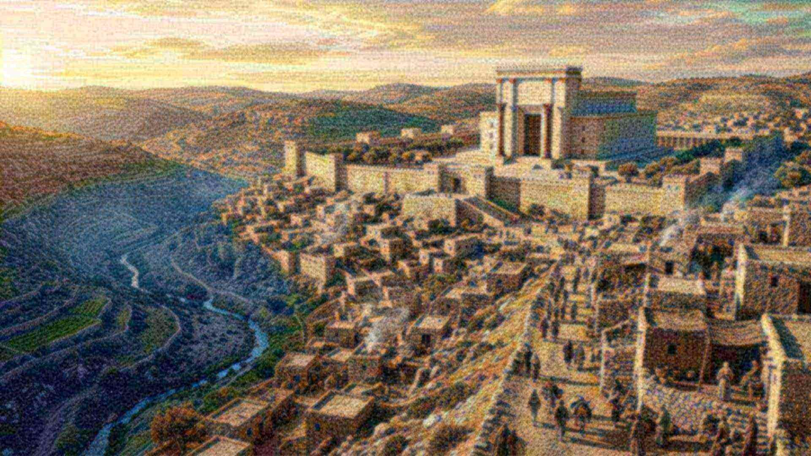

Salle 21 · Aile V — Les Prophéties
Jérusalem, l’exil et les soixante-dix ans
Un calendrier annoncé, un retour daté.
Quand les soixante-dix ans seront accomplis, je vous ramènerai.Jérémie 29:10
Le propos
Jérémie annonce soixante-dix ans de désolation et un retour. Les tablettes de rations babyloniennes nomment le roi de Juda exilé ; l’édit de Cyrus ouvre le retour. Le site expose aussi, sans détour, le désaccord des chronologies sur la date de la destruction.
AccomplieLa prophétie
Jérusalem, l’exil et les soixante-dix ans
Isaïe 39:5-7 ; Jérémie 25:11, 12 ; 29:10 ; 2 Rois 24–25 ; 2 Chroniques 36:17-23 ; Daniel 9:2
Ce qui est annoncé
- Les trésors du temple et la descendance royale seront emportés à Babylone.Isaïe 39:5-7
- Le pays restera désolé pendant soixante-dix ans.Jérémie 25:11 ; 29:10
- Au terme des soixante-dix ans, le retour est annoncé.Jérémie 29:10 ; Daniel 9:2
- Un roi perse ordonnera la reconstruction.2 Chroniques 36:22, 23 ; Esdras 1:1-4
Ce qui s’est passé
Jérusalem est prise et le temple détruit par les Babyloniens ; après la chute de Babylone en 539 av. n. è., l’édit de Cyrus permet le retour dès 537. Les tablettes de rations babyloniennes nomment le roi de Juda exilé et confirment la réalité de la déportation.
Nuance honnête : La datation de la destruction de Jérusalem fait l’objet d’un désaccord : la chronologie retenue ici, fondée sur les soixante-dix années de désolation et le retour en 537, aboutit à 607 av. n. è. ; la chronologie assyriologique courante retient 587/586. Le site expose les deux et le raisonnement, sans hostilité envers quiconque.
Pièces à conviction

Tablettes de rations de Joïakin
Tablettes administratives babyloniennes mentionnant « Ya’ukinu, roi de Yahudu » et sa ration d’huile : un roi de Juda vivant à la cour de Babylone, en accord avec les récits de l’exil.
- Conservation
- Vorderasiatisches Museum, Berlin
- Inventaire
- VAT 16378 et autres
- Datation
- vers 595 av. n. è.
- Vérifier
- catalogue du musée

Lettres de Lakish
Ostraca hébreux retrouvés à Lakish, écrits à la veille de la chute de Juda ; ils documentent le réseau de communication militaire de l’époque et un vocabulaire proche des récits de Jérémie.
- Conservation
- Israel Museum / British Museum
- Inventaire
- ostraca de Lakish
- Datation
- début du VIᵉ s. av. n. è.
- Vérifier
- catalogue du musée

Cylindre de Cyrus
Cylindre d’argile couvert d’une inscription akkadienne de Cyrus II, décrivant la prise de Babylone et le retour des peuples déportés dans leurs sanctuaires.
- Conservation
- British Museum
- Inventaire
- BM 90920
- Datation
- 539–538 av. n. è.
- Vérifier
- catalogue du musée
Objections honnêtes
Mais certains disent…
La science n’a-t-elle pas rendu Dieu inutile ?
La science décrit comment les choses fonctionnent ; elle ne dit pas pourquoi il y a quelque chose plutôt que rien. Un astronome qui mesure la composition d’une étoile ne prétend pas expliquer pourquoi les lois de la physique existent. Les deux questions sont différentes, et la seconde reste ouverte.
Le « réglage fin » n’est-il pas un argument trompeur ?
L’argument a des limites, et le site les expose : certaines marges sont plus larges qu’on ne le dit souvent, des prépublications récentes contestent des estimations classiques, et le multivers est une réponse possible — non observable, et qui doit elle-même être réglée. Ce qui reste solide, c’est le fait mesuré : les valeurs sont ce qu’elles sont, et une vie exigeante en dépend.
Pourquoi tant de souffrance si un Créateur bienveillant existe ?
C’est l’objection la plus sérieuse, et le site ne la minimise pas. La Bible ne présente pas la souffrance comme voulue par Dieu : elle l’attribue à la rébellion, au mauvais usage de la liberté et à un adversaire. Elle annonce aussi sa fin (Révélation 21:4 ; Isaïe 33:24). Une réponse de ce type demande une confiance ; elle ne se décrète pas.
Les prophéties n’ont-elles pas été écrites après les événements ?
C’est une objection légitime, et le site y répond par les manuscrits : les rouleaux de Qumrân datent d’avant le Ier siècle pour Isaïe et d’avant la fin du IIᵉ siècle av. n. è. pour Daniel. Cela prouve l’ancienneté des copies, pas nécessairement la date de composition : la critique universitaire situe souvent Daniel au IIᵉ siècle. Le site affiche ce désaccord au lieu de l’éviter.